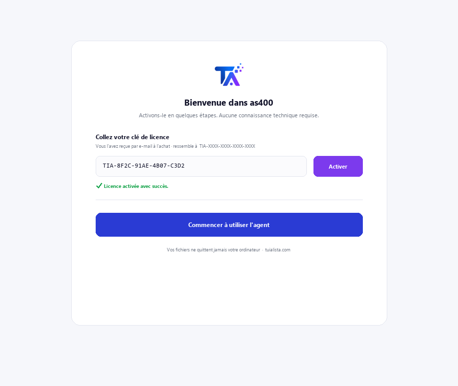
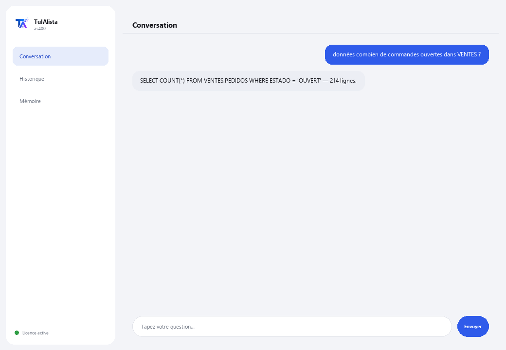

Agent AS/400 (IBM i) · Premium
Interrogez votre DB2 for i en langage naturel et comprenez le code RPG/COBOL hérité — sans connaître le SQL ni le système.
Que résout-il et de quoi avez-vous besoin ?
Les compétences IBM i sont rares dans le monde entier. Cet agent est le pont entre votre système AS/400 hérité et le langage naturel : vous posez des questions dans votre langue et il vous renvoie de vraies données de DB2 for i, ou vous lui donnez un fichier source RPG/COBOL et il vous l'explique sans jargon.
- Vous avez besoin de : votre clé de licence (TIA-XXXX-XXXX-XXXX-XXXX) et d'un accès à l'IBM i (hôte, utilisateur et mot de passe avec le IBM i Access ODBC Driver installé). Conçu pour un profil technique (IT / administration IBM i).
- Premier résultat : vous installez, activez votre licence et, après avoir configuré la connexion, lancez données <votre question>.
- Votre IBM i, ses données et votre code ne quittent jamais votre réseau — la connexion et les requêtes se produisent localement.
soporte@tuialista.com ou visitez tuialista.com/soporte — nous répondons généralement le jour même.1 Ce que fait cet agent
Il résout deux problèmes coûteux et difficiles à couvrir en raison de la pénurie mondiale de compétences IBM i :
- Interroger des données dans DB2 for i sans connaître le SQL ni le système. Vous posez des questions en langage normal et l'agent génère une requête SELECT DB2 for i (lecture seule), l'exécute et vous montre le résultat.
- Comprendre du code RPG et COBOL hérité. Vous lui donnez un fichier source RPG/COBOL et il vous l'explique en langage clair : ce qu'il fait, quelles données il traite et ce qu'il produit, sans supposer que vous connaissez le langage.
Tout se produit localement, dans votre réseau : la connexion à l'IBM i et les données ne quittent jamais votre infrastructure.
2 Installation
Pour Windows. Cet agent a une étape supplémentaire par rapport aux autres : la connexion à l'IBM i se configure à part, pas depuis la fenêtre d'activation.
Téléchargez l'installateur depuis tuialista.com/descargar (agent AS/400) et ouvrez-le. Il crée un raccourci sur votre bureau avec le logo — pas besoin de Python ni de terminal.
Double-cliquez sur la nouvelle icône. Collez votre clé de licence (reçue par e-mail à l'achat) et cliquez sur Activer. Contrairement aux autres agents, il ne vous demande pas de choisir un dossier — cet agent se connecte à une base de données, pas à des fichiers locaux.
Installez le IBM i Access ODBC Driver (de IBM i Access Client Solutions) sur l'ordinateur où l'agent fonctionne, et définissez les variables d'environnement AS400_HOST, AS400_USER et AS400_PASSWORD avec les données de votre système. Cette étape est normalement réalisée par le service informatique.

3 Comment l'utiliser
L'agent ouvre une fenêtre de discussion, comme une app de messagerie — pas un écran noir de programmeur. Il a deux commandes plus quitter :

> données <question>Vous écrivez votre question en langage naturel. L'agent génère une requête SELECT DB2 for i (syntaxe BIBLIOTHÈQUE.TABLE), la valide comme lecture seule et l'exécute. Ex. : données combien de commandes ouvertes y a-t-il dans la bibliothèque VENTES ? Les résultats sont limités à 100 lignes par requête.
> explique <fichier>Vous lui donnez le chemin d'un fichier avec du code source RPG ou COBOL et il vous explique son but, les données qu'il traite et ce qu'il produit, sans jargon inutile.
> quitterTermine la session (fonctionne aussi avec exit).
4 Exemples d'usage courant
Un décompte opérationnel
données combien de factures ont été émises hier ?
Un total depuis une table physique
données additionne le montant des commandes de la bibliothèque VENTES ce mois-ci
Expliquer un programme que “personne ne comprend”
explique /home/sources/CALCNOM.cbl — idéal quand vous héritez de milliers de lignes de RPG/COBOL sans documentation.
Construire un pont vers le moderne
Utilisez données pour extraire des chiffres de l'IBM i et les amener dans un rapport ou tableau de bord, sans exposer le système hérité à des outils externes.
5 Questions fréquentes
Peut-il modifier ou endommager les données de production de l'IBM i ?
Ai-je absolument besoin du pilote d'IBM ?
Les données de l'IBM i sortent-elles de mon réseau ?
Quels langages de code peut-il expliquer ?
Génère-t-il du SQL standard ou du DB2 for i ?
Combien de lignes une requête renvoie-t-elle ?
Dans quelle langue répond-il ?
Pourquoi est-il “Premium” ?
Puis-je cibler plusieurs bibliothèques ?
Le SQL généré est-il toujours correct ?
6 Résolution de problèmes
“pyodbc et le pilote 'IBM i Access ODBC Driver' manquants”
Ne se connecte pas à l'IBM i
“Seules les requêtes en lecture (SELECT) sont autorisées”
Affiche “Licence invalide” ou demande de se reconnecter
“Aucun fournisseur d'IA configuré”
Aucune de ces solutions n'a résolu votre problème ? Écrivez-nous directement — nous serons ravis de l'examiner avec vous.
soporte@tuialista.com ou visitez tuialista.com/soporte — nous répondons généralement le jour même.7 Confidentialité
Votre IBM i, ses données et votre code ne quittent jamais votre réseau.
- L'agent se connecte à l'IBM i localement (dans votre réseau) et y exécute les requêtes. Les résultats ne sont envoyés à aucun serveur.
- Seul le schéma (noms des tables/colonnes) et votre question sont envoyés à l'IA pour rédiger la requête SELECT, ou le fichier source RPG/COBOL que vous lui demandez d'expliquer. Les données renvoyées par une requête ne sont pas transmises au moteur d'IA.
- La seule chose qui transite par internet est : (1) une vérification que votre licence est active, et (2) le contexte nécessaire (schéma + question, ou le code à expliquer) pour générer la réponse.